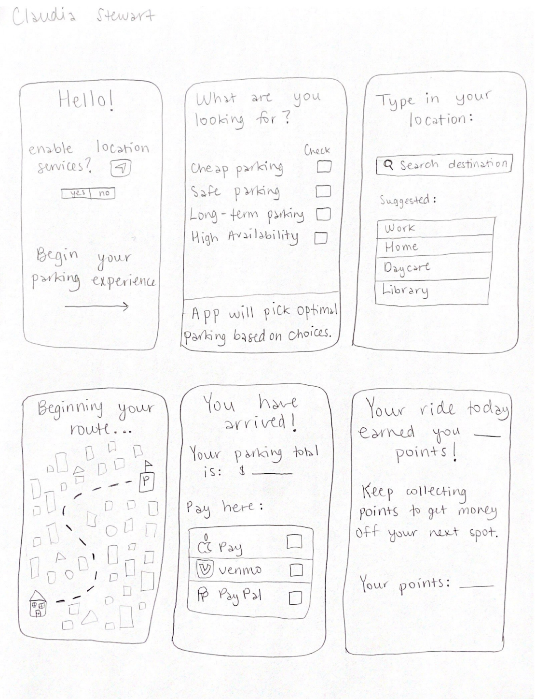

Problem Statement: Parking

Our users are struggling to find affordable and available parking in major cities. Our solution to this should provide users with available parking and the rate for parking at that specific place, because everyone's budget for parking will differ.
Affinity Diagram: Parking

Team Geek Chic created categorized lists dealing with parking. We discussed problems that users face when finding/paying for parking, potential app details, and pinpointed exactly who our users are.
Personna: Geek Chic's Personnas
Team Geek Chic created various personas to show how people from different backgrounds can utilize this app to aid them in their parking experience.
Storyboard: Geek Chic's Storyboards

Team Geek Chic illustrated various storyboards that depict their personas using the app and why it is useful.
Sketches: Geek Chic's Sketches
These are rough sketches of how the app could be designed.
Paper Prototype
This is a paper prototype of My Parking Pal that walks through how the app works.